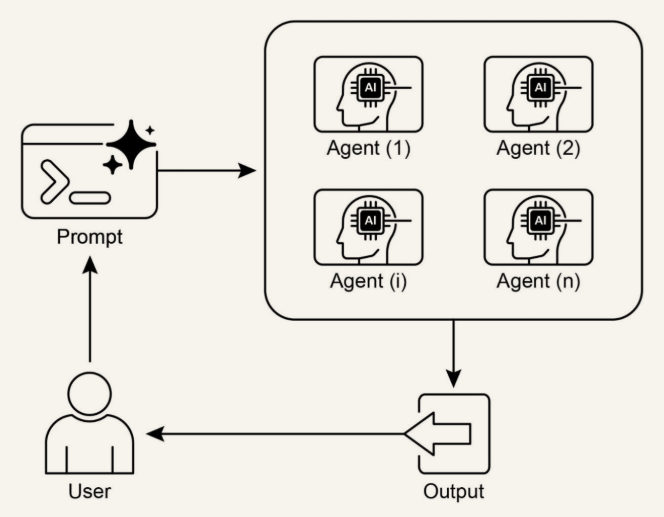

01
Деление задачи
Общую цель режут на отдельные подзадачи. Каждую берёт агент со своими инструментами, своими данными и своим способом рассуждать.
Один агент хорош для ясной задачи. Сложную цель из нескольких областей делят между агентами. Этот паттерн называют Multi-Agent Collaboration.
Общую цель режут на отдельные подзадачи. Каждую берёт агент со своими инструментами, своими данными и своим способом рассуждать.
Исследовательский запрос делят так: один агент собирает сведения, другой считает, третий пишет итоговый отчёт.
Агентам нужен один способ передавать данные, отдавать подзадачи и согласовывать слова. Иначе итог расходится.
Части можно менять по отдельности. Систему можно наращивать. Сбой одного агента не обязан останавливать остальных.

Вместе агенты делают то, чего каждый по отдельности не сделает.